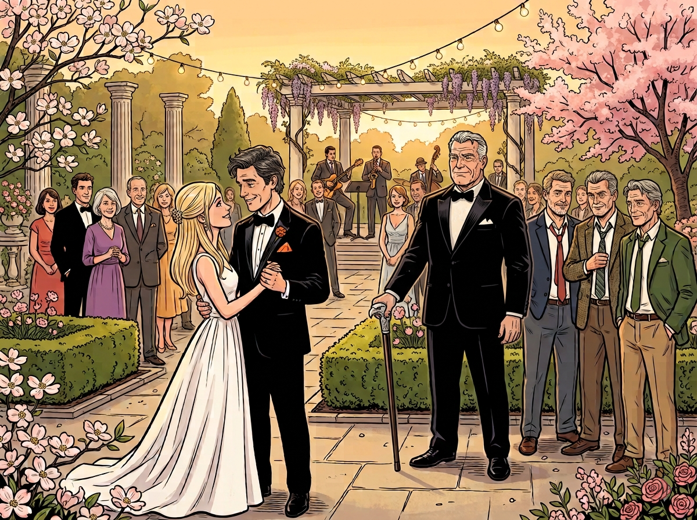

Hidden Scene · The Orange Robot
The band was mid-song when Joey took Emmy's hand and led her to the center of the courtyard. The guitarist nodded at them. The saxophonist leaned into something slower.
At the edge of the gathered crowd, Uncle Peter and Auntie Tess clutched each other, watching the young couple move across the floor. Peter's arm tightened around his wife's waist. Fifty years ago they'd stood in a moment just like this one, and the memory of it — the certainty, the hope — crossed both their faces at once.
Emmy looked up at Joey. "You're actually dancing."
"Don't make it weird."
She laughed and settled into him, her head just below his chin. The string lights above them swayed lightly in the spring breeze. Cherry blossoms had dropped onto the stone pavers and nobody had swept them away and it looked intentional.
Frank stood at the edge of the courtyard with his cane, watching. He'd loosened his bow tie somewhere between the cocktail hour and now. Joey had noticed but said nothing.
Dale was nearby, sport coat, tie knot sitting somewhere between a Windsor and a mistake. He leaned toward Curtis. "He looks like he belongs there."
Curtis watched Joey and Emmy for a moment. "Yeah."
Neither of them said anything else.
Raul found Frank near the hedgerow. He was holding two glasses and offered one. Frank took it without looking away from the dance floor.
"You did good," Raul said.
Frank shook his head slowly. "He did good."
Raul lifted his glass and left it at that.
On the dance floor Emmy pulled back just enough to look at Joey. "Your pocket square is crooked."
"I know."
"You're not going to fix it?"
"No."
She smiled and put her head back against his chest.
Ken was at a table near the pergola with his wife, wisteria hanging overhead, the smell of it mixing with whatever the caterers were doing inside. He watched the courtyard fill slowly as other couples drifted onto the floor around Joey and Emmy.
At a nearby table, Lee Chen sat with his wife, both of them watching Joey and Emmy with genuine smiles. Around them, the Rebar crew — colleagues who'd worked alongside Joey — talked and laughed, occasionally glancing over at the dance floor with quiet approval.
Mike stood alone for a moment near the bar, drink in hand, watching his brother dance. Leo appeared beside him.
"You good?" Leo said.
Mike took a sip. "Yeah."
He meant it.
Across the courtyard, Uncle Maurice had cornered Dale and Curtis near one of the garden walls. He was gesturing animatedly, talking about guns the way he always did at family gatherings, and both men were nodding along despite themselves.
The song ended. Joey and Emmy stayed on the floor for a moment, swaying even as the music faded. They turned slightly and caught Frank's eye across the courtyard. They smiled at him.
Frank moved toward them slowly, his cane tapping against the stone. When he reached them he took Emmy's hands in his, still holding the cane in one hand, and looked up at her.
In the background, Emmy's mother Connie stood with her daughters Lisa and Yvonne. All three of them watched, smiling, wondering what Frank was saying to her.
"When I looked at your eyes just now," Frank said, "I saw the same look my wife gave me on our wedding day. The same beauty. That's how I know your love for Joey is real."
Emmy's eyes went bright.
Frank steadied himself. "I know you two will have the best life together. A wonderful life together."
He squeezed her hands once and stepped back.
The band started again. Someone had requested something with a faster tempo and the courtyard responded. Dale grabbed the nearest woman and attempted something that was not quite dancing. Curtis shook his head. Leo laughed.
Joey watched his brothers from the middle of the floor, Emmy's hand still in his.
The cherry blossoms moved across the stone in the breeze and nobody swept them away.
✦ ✦ ✦